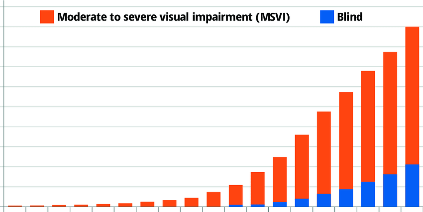

Did you know glaucoma is a leading cause of irreversible blindness worldwide? Millions of people are affected, with some regions facing a higher prevalence than others.Early detection is crucial to prevent vision loss, so let's delve deeper into understanding this silent thief of sight.
-year on year growth of vision loss and blindness
Imagine the optic nerve as the crucial cable connecting your eye to the brain, transmitting the information you see. Glaucoma damages this nerve, often due to increased pressure within the eye (intraocular pressure).The insidious nature of glaucoma lies in its gradual progression. Often, there are minimal initial symptoms, leading to delayed diagnosis and potentially permanent vision loss.
•Significantly slow vision loss by catching the disease before it progresses.
•Lead to better treatment outcomes with more options available to prevent vision loss altogether.
•Offer peace of mind through proactive eye care and potential cost savings** in the long run by avoiding expensive interventions later.